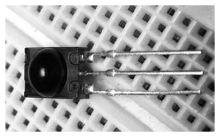
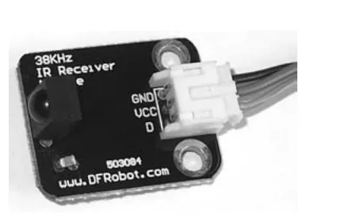
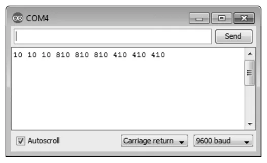

Before moving forward, we need to install the infrared Arduino library, so visit https://github.com/shirriff/Arduino-IRremote/ to download the required files and install them, as explained in “Expanding Sketches with Libraries” on page 169.
The IR Receiver
The next step is to set up the IR receiver and test that it is working. You can choose either an independent IR receiver (shown in Figure 15-1) or a prewired module (shown in Figure 15-2), which is the easier route to take.


The independent IR receiver shown in Figure 15-1 is a Vishay TSOP4138, available from retailers such as Newark (part number 59K0287) or element14 (part number 1040743). The bottom leg of the receiver (as shown in the figure) connects to an Arduino digital pin, the center leg to GND, and the top leg to 5V.
Figure 15-2 shows a prewired IR module. Prewired receiver modules are available from DFRobot and other retailers. The benefit of using these modules is that they include connection wires and are labeled for easy reference.
Regardless of your choice of module, in all of the following examples, you’ll connect the D (or data line) to Arduino digital pin 11, VCC to 5V, and GND to GND.
The Remote Control
Finally, you will need a remote control. We’ll use a Sony TV remote like the one shown in Figure 15-3. If you don’t have access to a Sony remote, any inexpensive universal remote control can be used after you reset it to Sony codes. See the instructions included with your remote control to do this.
A Test Sketch
Now let’s make sure that everything works. After connecting your IR receiver to the Arduino, enter and upload the sketch in Listing 15-1.
// Listing 15-1
int receiverpin = 11; // pin 1 of IR receiver to Arduino digital pin 11
❶ #include <IRremote.h> // use the library
❷ IRrecv irrecv(receiverpin); // create instance of irrecv
❸ decode_results results;
void setup()
{
Serial.begin(9600);
irrecv.enableIRIn(); // start the IR receiver
}
void loop()
{
❹ if (irrecv.decode(&results)) // have we received an IR signal?
{
❺ Serial.print(results.value, HEX); // display IR code on the Serial Monitor
Serial.print(" ");
irrecv.resume(); // receive the next value
}
}This sketch is relatively simple, because most of the work is done in the background by the IR library. At ❹, we check to see if a signal has been received from the remote control. If so, it is displayed on the Serial Monitor in hexadecimal at ❺. The lines at ❶, ❷, and ❸ activate the IR library and create an instance of the infrared library function to refer to in the rest of the sketch.
Testing the Setup
Once you’ve uploaded the sketch, open the Serial Monitor, aim the remote at the receiver, and start pressing buttons. You should see codes displayed on the Serial Monitor after each button press. For example, Figure 15-4 shows the results of pressing 1, 2, and 3, once each.

Table 15-1 lists the codes from a basic Sony remote control that we’ll use in upcoming sketches. However, when running Listing 15-1, notice how each code number repeats three times. This is an idiosyncrasy of Sony IR systems, which send the code three times for each button press. You can ignore these repeats with some clever coding, but for now let’s skip to remote controlling with the next project.
| Button | Code | Button | Code |
|---|---|---|---|
| Power | A90 | 7 | 610 |
| Mute | 290 | 8 | E10 |
| 1 | 10 | 9 | 110 |
| 2 | 810 | 0 | 910 |
| 3 | 410 | Volume up | 490 |
| 4 | C10 | Volume down | C90 |
| 5 | 210 | Channel up | 90 |
| 6 | A10 | Channel down | 890 |